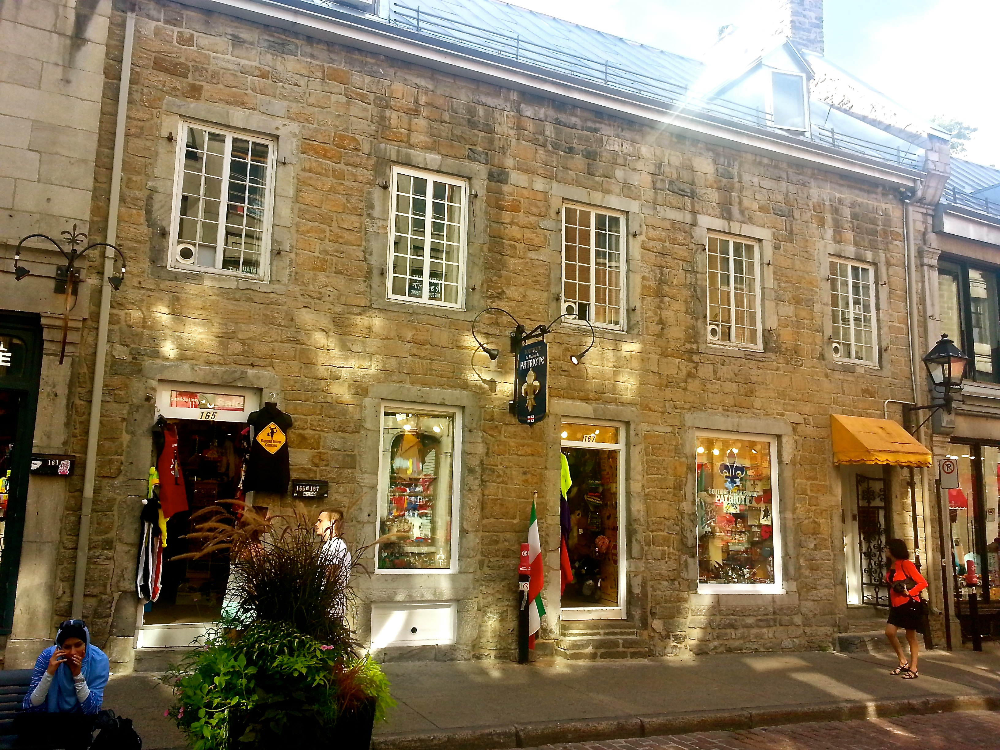

Design Best Practice Checklist
To view a detailed evaluation of the JavaJam site created in earlier chapters, please select a Design Best Practice topic from the tabs on the right.
Accessibility
- The main navigation doesn't consist of images and multimedia. There is no navigation in the
footer area.
- The navigation for the JAvaJam site is structured, but not in a list.
- There are no navigation aids used.
- Color is not used alone to convey meaning. The tabs are underlined hyperlinks at this
point in the development of this site.
- Text color does have sufficient contrast with background color.
- The image elements do use the alt attribute to configure alternate text replacement.
- There are no graphics used to convey meaning, unless this means thumbnails. In that case, they do
convey that they are thumbnails and provide a description of the image.
- There is no other media used to convey meaning.
- There are no audio or video files, so captions for those are not necessary.
- Attributes designed to improve accessibility, such as alt and title, are definitely used
where appropriate.
- There is no table data, so no need to use any attributes to improve its accessibility.
- This site does not use frames at this time.
- The spoken language of the page is definitely indicated with the HTML element's
lang attribute.
- There is no role attribute at this time for this site.